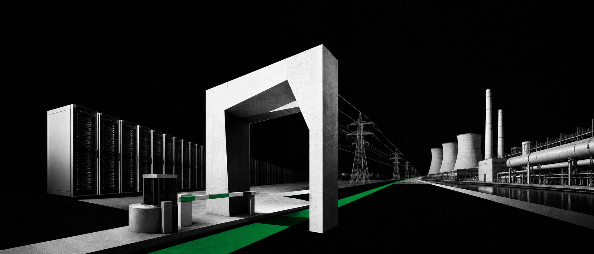
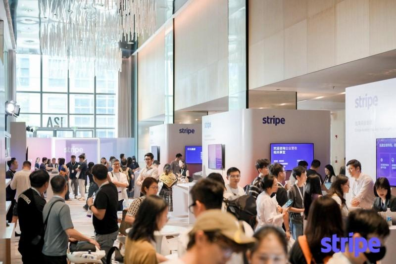
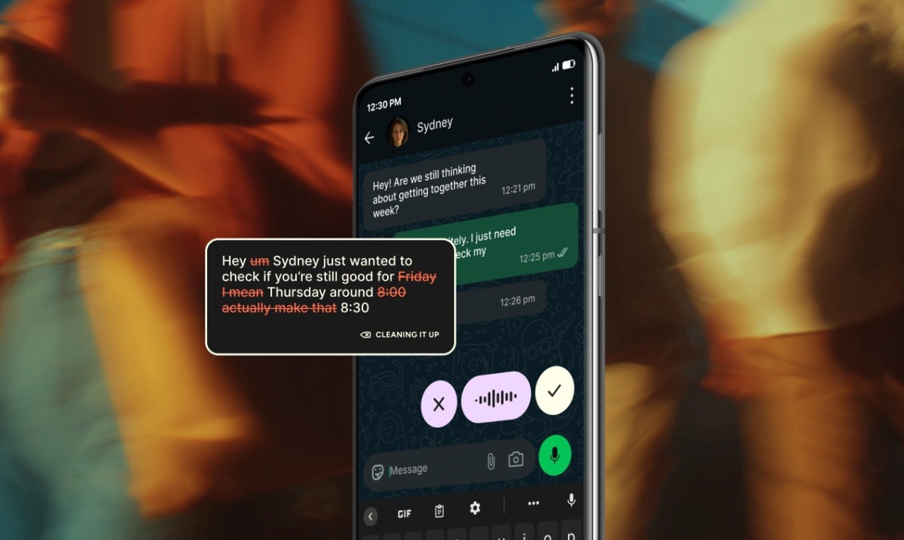
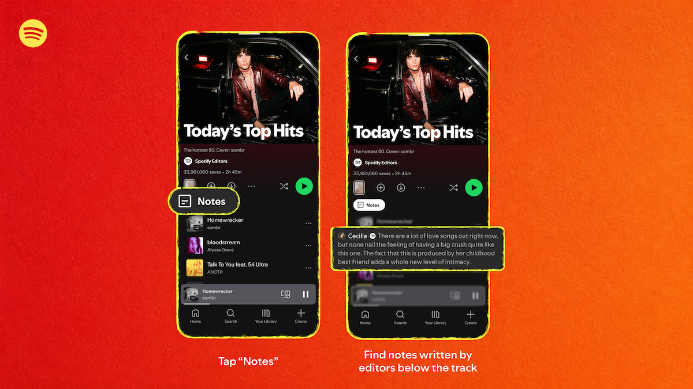
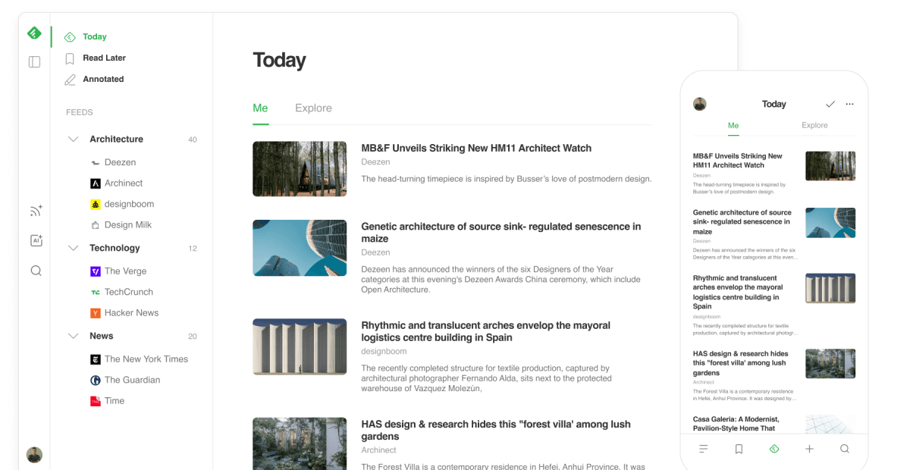
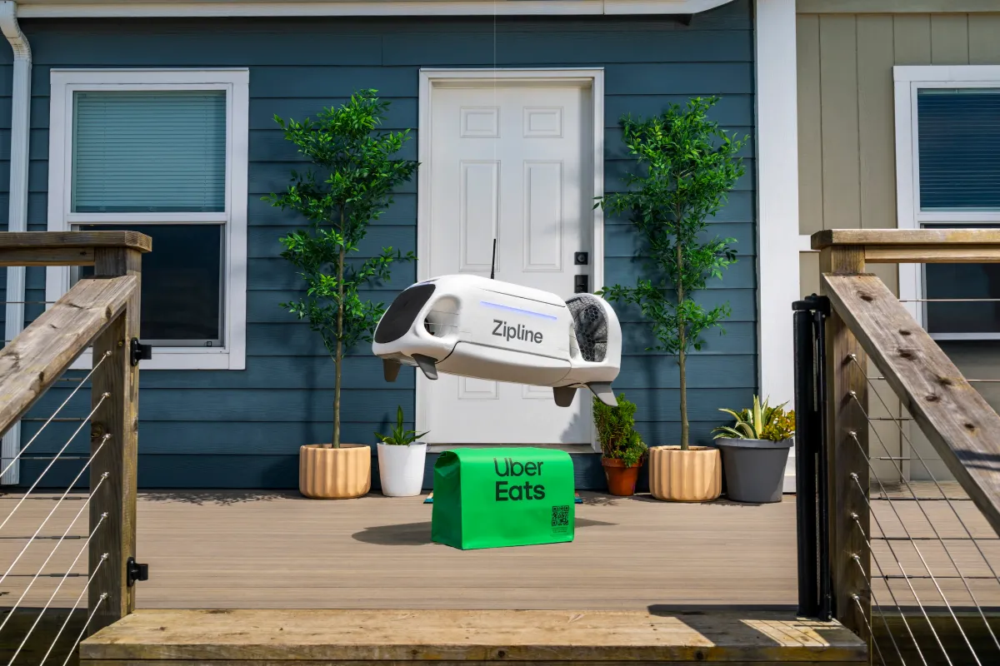
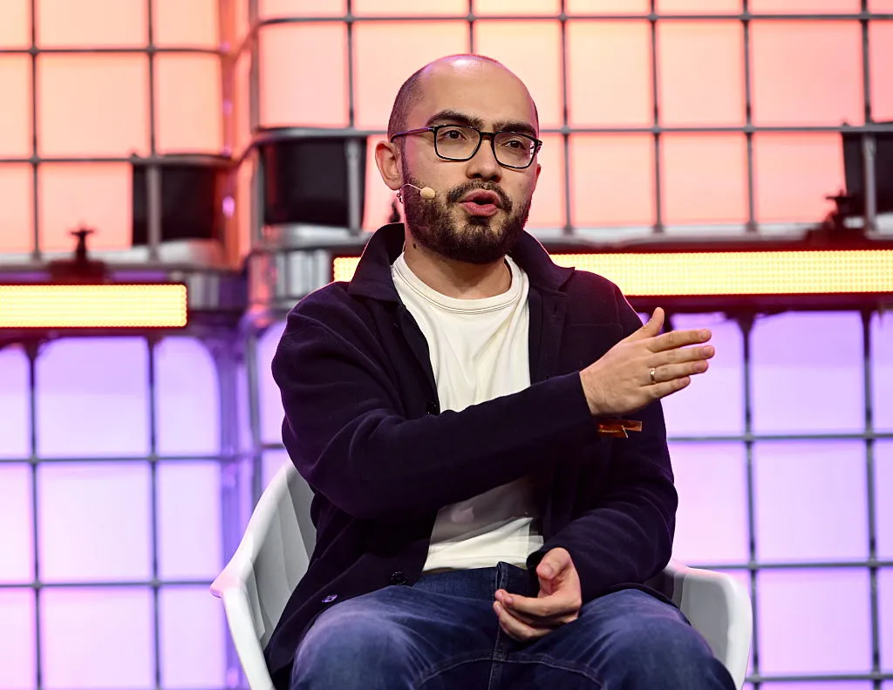
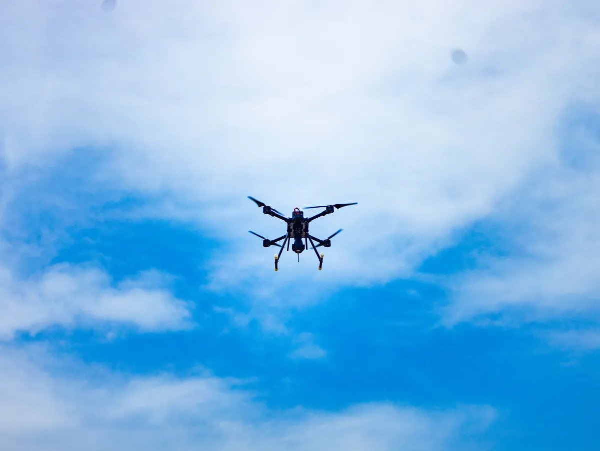
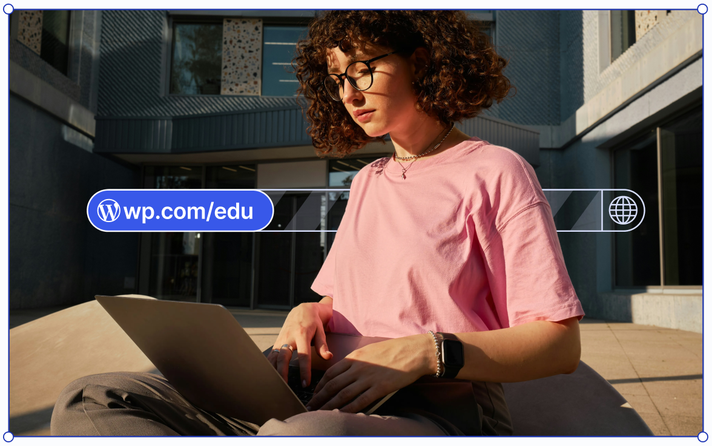

2026-08-18
VOL 322

读者，早。
创作者这边也在改尺子。YouTube 把“播放”直接算作观看，Spotify 给推荐补回署名理由，Reddit 把文字翻成音视频。数字会更漂亮，内容也更易消费，但谁真正停留、谁承担劳动、谁保留解释权，不能只看首页那一个计数。

Axios 8 月 17 日报道，Stripe 已同意以超过 80 亿美元的现金加股票收购模型市场 OpenRouter。OpenRouter 累计融资 1.64 亿美元，5 月估值为 13 亿美元；官方公告预计本周发布，双方尚未公开评论。OpenRouter 为开发者提供跨模型选择和切换入口，而 Stripe 已经为多家前沿实验室处理支付。

TechCrunch 8 月 17 日转述 Bloomberg 与 Financial Times 报道，Anthropic 7 月底年化收入 run rate 超过 650 亿美元，5 月为 470 亿美元，2025 年末为 90 亿美元。投资者预计年底可能达到 1000 亿至 1200 亿美元。这里的数字是按近期收入推算全年，并非已经实现的全年收入；公司未回应报道。
Nvidia 8 月 17 日宣布向 SB Energy 投资 15 亿美元，成为俄亥俄 Ports-Pike 数据中心的唯一算力基础设施供应商，并提供最高 1050 亿美元信用支持。设施初期规模为 4.25GW，可扩至 8GW；同址还规划一座 9.2GW 天然气电厂，预计耗资 330 亿美元。报道援引 BloombergNEF 称，天然气电厂建造成本两年上涨 66%。
404 Media 将追踪器放进一本稀有书，最终定位到 Amazon 位于拉斯维加斯的 VGT3 设施。报道据此称，Amazon 正通过商业渠道大量购买稀有书，切掉书脊后扫描，作为训练资料。Amazon 回应称购买书籍是为了改进客户使用的产品和服务，但没有进一步说明用途；现有报道并未证明这一做法违法。
YouTube 8 月 17 日宣布，从 8 月 24 日起，普通视频一开始播放或用户进入直播，就计入一次 view。平台会在创作者 Analytics 中保留原有口径并改称 Engaged views，用来显示有多少人继续观看。YouTube 表示，新口径不影响创作者收入，也不改变加入 YouTube Partner Program 的资格。

Wispr 8 月 17 日发布新的语音理解模型 Canto，称可将错误率从 30% 降到低于 10%。此前数周有用户反映 Wispr Flow 的听写质量下降。公司同时上线会议记录工具，可生成摘要和行动项，并计划进一步接入文档、邮件等工作环节。
AI 自动化工具 Relay 宣布关闭，付费客户可使用到 9 月 14 日，免费客户已在 8 月 15 日失去访问。创始人 Jacob Bank 与部分员工加入 Google Chrome 团队，Bank 将担任产品副总裁。他称 Chrome 是人与 agents 协作的理想位置，但双方尚未公布具体整合方案。
Reddit 8 月 17 日开始在部分英文社区测试帖子的音频和视频版本，iOS 与 Android 用户可在“阅读”和“播放”之间选择。原始文字与评论都会保留。公司此前注意到，TikTok、Reels 等平台已有大量创作者用 TTS 朗读 Reddit 故事，因此希望测试这种消费方式在站内是否成立。

Spotify 上线 Playlist Notes，用户可在自己创建或协作的歌单里，为歌曲、播客和有声书添加备注；平台编辑也可解释选曲，并通过 Editor Profiles 展示参与制作的歌单。用户备注向 100 多个市场的 iOS 与 Android 用户推出，编辑备注先覆盖美国、加拿大、英国等六国的 16 岁以上用户。

Feedly 网页端连续一周多严重变慢，部分付费用户称已难以使用。CEO Edwin Khodabakchian 表示，问题可能与文件夹较多的账户使用 Mark as Read 有关，团队已发布修复并继续核实。Feedly Classic 两周前无通知退役；公司强调，转向 cyber threat intelligence 并不代表放弃 RSS。

Uber 宣布投资并合作无人机配送公司 Zipline，目标是在 2029 年底前使用其无人机每天完成 100 万单。首批 Uber Eats 配送计划今年底在 Zipline 现有市场上线，之后扩展到数十个美国城市。双方未披露投资金额；Uber 称相关配送有望在 5 至 10 分钟内完成。
Apple 新一轮 mercenary spyware 威胁通知覆盖 110 个国家。Access Now 表示，本批通知后的求助量比通常高 30% 至 40%；Citizen Lab 研究员称，公开报告的规模和地理分布前所未见。Apple 今年把通知扩展到锁屏、设置、邮件和网页账户。收到通知意味着设备曾被针对，不等于已经确认攻破。
Sonic Fire Tech 获得 1500 万美元融资，正在测试一种声学灭火系统：传感器发现火情后，设备通过天花板 PVC 管释放约 20Hz 的次声波，试图在数秒内压制火焰，并避免水与化学剂造成的清理损害。产品仍需 NFPA 相关审批和更多测试；目前面对锂电池火只能限制蔓延，不能将其扑灭。

AI 视频公司 Higgsfield 完成 4 亿美元 B 轮融资，估值达到 54 亿美元；八个月前估值为 13 亿美元。公司称其年化收入为 7 亿美元，拥有 3000 万用户，覆盖 200 个国家，并服务 390 家财富 500 强企业。创始人称，生成一分钟视频所需的计算量类似处理 6 万个词。

Groq 融资 3.5 亿美元，估值为 35 亿美元，低于去年 69 亿美元。此前 Nvidia 通过一笔 200 亿美元许可交易吸收了 Groq 创始人 Jonathan Ross 与部分核心人才。Groq 已从自研 LPU 芯片转向运营 Nvidia 系统的 neocloud，计划 2027 年将规模从 54MW 扩到 200MW 以上；目前运营 13 个数据中心，称服务超过 600 万开发者和企业。

非洲防务科技公司 Terra Industries 宣布新增 1800 万美元融资，使其种子轮总额达到 5200 万美元，投资方包括 8VC、Silent Ventures 和 Nova Global。公司计划生产无人机、扫雷战车等自主系统，并称在手合同有望达到 1 亿美元。新资金将用于扩充全球南方的制造能力、开设伦敦办公室并加快产品部署。

Automattic 上线 WordPress.com Education，教师可让学生第一年免费使用且无需信用卡。每位学生可获得站点、.blog 或 .art 域名、6GB 空间、备份、staging、插件、SFTP/SSH、phpMyAdmin 与 Studio Sync。一年后可按每月 2 美元继续，或降级到免费站点且内容保留。该计划已在 27 国、5000 名学生中试点。